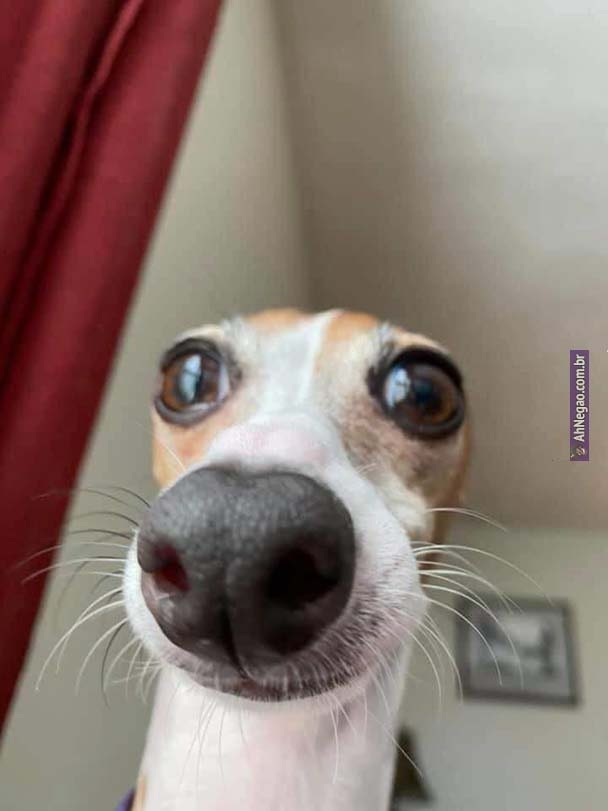
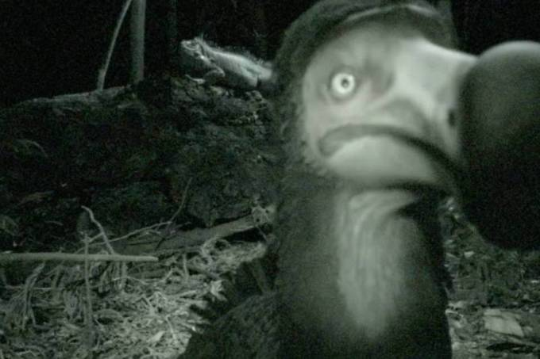

Fiz uma promessa para mim mesmo, Nunca mais comer Torresmo
Beleza, mas isso não muda o fato que na Austrália há 47 milhões de Cangurus e no Uruguai há 3.457.000 habitantes. Então se os cangurus decidirem invadir o Uruguai, cada Uruguaio vai ter que lutar com 14 cangurus

